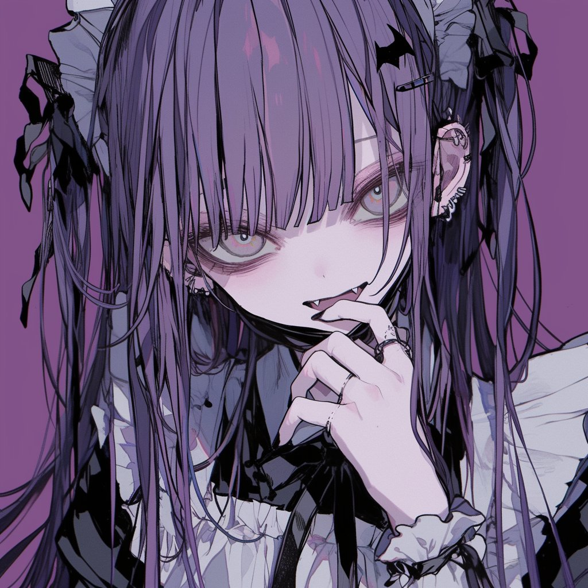

HELLO, I'M
Septuagint
Computing the universe with me.
⌘ GitHub ↗
◎ Steam ↗
✳ Discord ↗
✉ Email ↗
EXPERIMENT 002 / DEPTH & LIGHT
移动光标，转动一块悬浮的玻璃。
四种空间表达，同一幅插画。

HELLO, I'M
Computing the universe with me.
此浏览器暂时无法显示实时 3D 折射，当前为静态插画。
01 / LEVITATE
一整块通透玻璃托住插画，边缘随视角折光，克制而清晰。